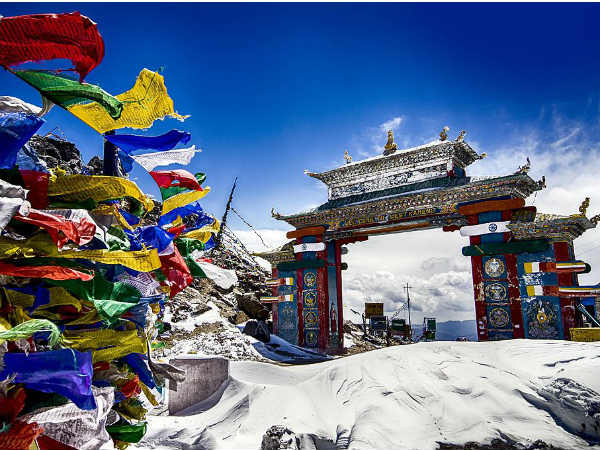
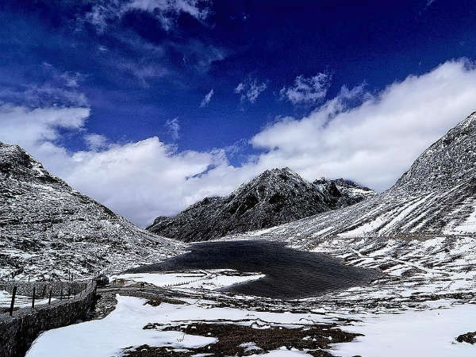
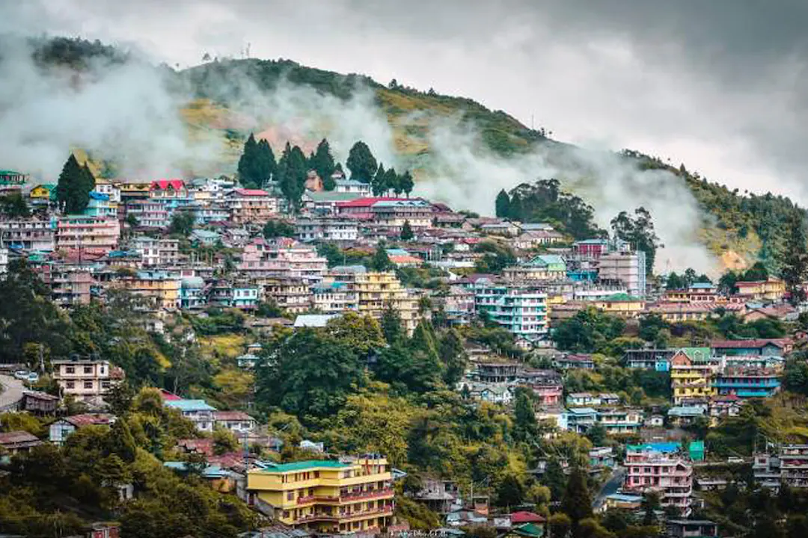
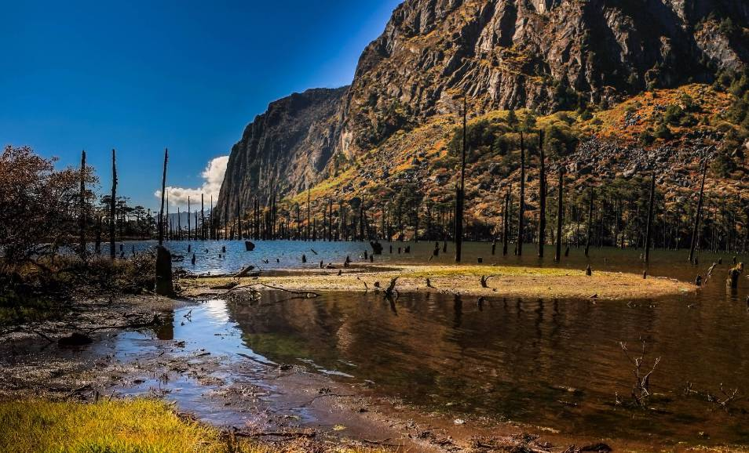
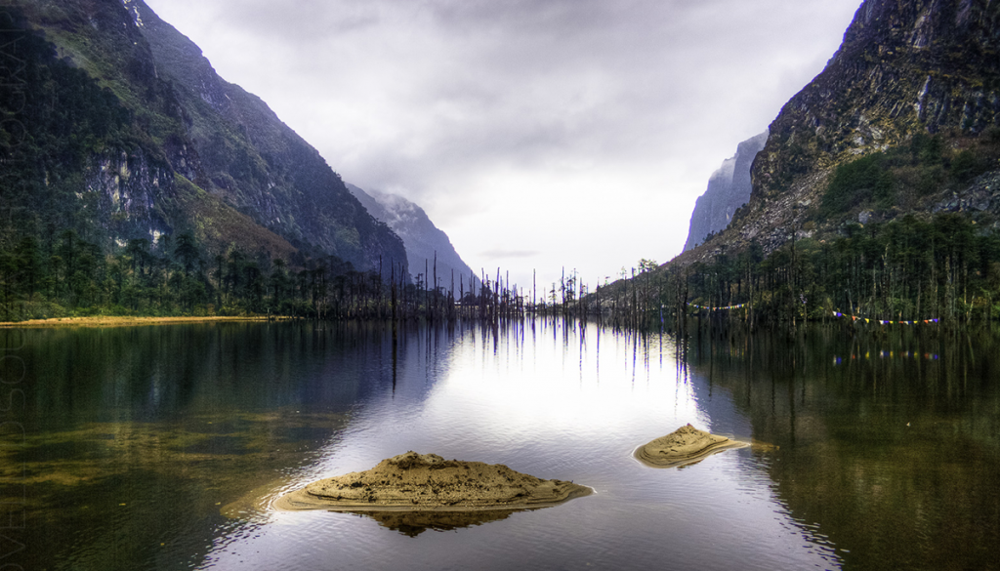

ARUNACHAL
SELA PASS
Sela Pass, nestled in the majestic Himalayan ranges of Arunachal Pradesh, stands as a testament to
nature's grandeur and the region's strategic significance. Perched at an altitude of approximately
13,700 feet, it serves as a vital link between the Tawang and West Kameng districts, connecting the
towns of Tawang and Bomdila. This high-altitude mountain pass not only offers spectacular views of
snow-capped peaks but also serves as a crucial transit route for both civilian and military
purposes, especially given its proximity to the border with China.
The journey through Sela Pass is a mesmerizing experience, with every turn revealing new vistas of
alpine meadows, rugged terrain, and azure skies. Travelers are treated to panoramic views of the
surrounding Himalayan peaks, including the imposing Gorichen Peak, as they navigate the winding
mountain roads. Along the route, the pristine beauty of Sela Lake, also known as Paradise Lake,
captivates visitors, especially when it remains frozen during the winter months, adding to the
pass's allure.
Despite its scenic splendor, traversing Sela Pass comes with its share of challenges, particularly
during the harsh winter months when heavy snowfall and icy conditions can make travel hazardous. The
Indian Army's presence in the region underscores its strategic importance, ensuring the security of
the border and the safety of travelers navigating the pass. Travelers are advised to exercise
caution and be prepared for sudden changes in weather when venturing through this high-altitude
terrain.


Beyond its natural beauty and strategic significance, Sela Pass offers glimpses into the rich
cultural heritage of the region. Nearby, visitors can explore Buddhist monasteries that dot the
landscape, providing insights into the spiritual traditions of the area. The town of Tawang, with
its iconic Tawang Monastery, stands as a testament to the region's Tibetan Buddhist heritage,
offering travelers a deeper understanding of the cultural fabric of Arunachal Pradesh.
In essence, Sela Pass is more than just a mountain pass; it's a gateway to adventure, exploration,
and cultural immersion in the heart of the Himalayas. Whether marveling at its breathtaking vistas,
navigating its challenging terrain, or discovering its cultural treasures, Sela Pass promises an
unforgettable journey for those who dare to venture into its realm.
BOMDILA
Bomdila, a quaint town nestled in the Himalayan foothills of Arunachal Pradesh, India, is renowned
for its serene ambiance, breathtaking landscapes, and rich cultural heritage. Situated at an
altitude of approximately 8,200 feet above sea level, Bomdila offers visitors a tranquil retreat
from the hustle and bustle of city life. The town is surrounded by snow-capped peaks, lush green
valleys, and cascading waterfalls, creating a picturesque backdrop that enchants travelers seeking
solace amidst nature's embrace.
One of Bomdila's main attractions is its panoramic views of the Himalayan range, including the
towering Kangto and Gorichen peaks, which stand as sentinels guarding the town. Visitors can marvel
at these majestic mountains from various vantage points, including Bomdila View Point, which offers
uninterrupted vistas of the snow-capped summits and verdant valleys below.
Bomdila is also renowned for its rich cultural tapestry, with a significant population of Monpa and
Sherdukpen tribes inhabiting the region. Visitors can immerse themselves in the local culture by
exploring traditional Monpa villages, visiting Buddhist monasteries, and attending colorful
festivals that showcase the region's vibrant heritage. The Tawang Monastery, located nearby, is one
of the largest and most revered monasteries in the region, offering insights into Tibetan Buddhist
traditions and architecture.


For adventure enthusiasts, Bomdila serves as a gateway to various trekking trails that meander
through pristine forests, alpine meadows, and remote villages. Trekking expeditions to destinations
like Eaglenest Wildlife Sanctuary and Sela Pass provide opportunities to encounter diverse flora and
fauna, including rare bird species and elusive wildlife.
In addition to its natural beauty and cultural attractions, Bomdila offers visitors a chance to
savor the flavors of Arunachali cuisine, which includes specialties like thukpa (noodle soup), momos
(dumplings), and zan (a traditional porridge). Local markets in Bomdila also offer handicrafts,
textiles, and artifacts crafted by local artisans, providing opportunities for souvenir shopping and
supporting the region's economy.
Overall, Bomdila captivates visitors with its serene landscapes, cultural richness, and warm
hospitality, making it a must-visit destination for those seeking an authentic Himalayan experience.
Whether exploring its natural wonders, delving into its cultural heritage, or embarking on outdoor
adventures, Bomdila offers a memorable retreat in the lap of the Himalayas.
SUNGESTER LAKE
Sungester Tso, also known as Sungester Lake, is a captivating alpine lake nestled amidst the
pristine landscapes of Arunachal Pradesh, India. Located in the Tawang district, Sungester Tso is
renowned for its serene ambiance, crystalline waters, and breathtaking mountain vistas. Situated at
an elevation of approximately 13,020 feet (3,970 meters) above sea level, the lake offers visitors a
tranquil retreat into the heart of the Himalayas.
One of the highlights of Sungester Tso is its stunning natural beauty, which captivates travelers
with its azure waters reflecting the surrounding snow-capped peaks and verdant meadows. The lake's
pristine waters create a mirror-like surface that mirrors the majestic mountains and clear blue
skies, creating a scene of ethereal beauty that enchants all who visit.
Sungester Tso is not only a visual delight but also holds cultural significance for the local Monpa
and Sherdukpen tribes who inhabit the region. According to local folklore, the lake is believed to
be sacred, with legends and myths surrounding its origins and spiritual significance. Visitors can
immerse themselves in the rich cultural heritage of the area by interacting with locals, exploring
nearby villages, and experiencing traditional ceremonies and festivals.


The journey to Sungester Tso is an adventure in itself, with travelers traversing winding mountain
roads and rugged terrain to reach the lake's pristine shores. Along the way, they are treated to
panoramic views of the Himalayan landscape, including iconic peaks like Kangto and Gorichen, which
dominate the skyline.
For outdoor enthusiasts, Sungester Tso offers opportunities for trekking, camping, and nature
photography amidst its scenic surroundings. Trekking trails wind through alpine meadows, dense
forests, and remote villages, providing adventurers with glimpses of Arunachal Pradesh's diverse
flora and fauna.
In essence, Sungester Tso is more than just a lake; it's a gateway to adventure, exploration, and
cultural immersion in the heart of the Himalayas. Whether marveling at its natural beauty, delving
into its cultural heritage, or embarking on outdoor adventures, Sungester Tso promises an
unforgettable experience for those who dare to venture into its realm.